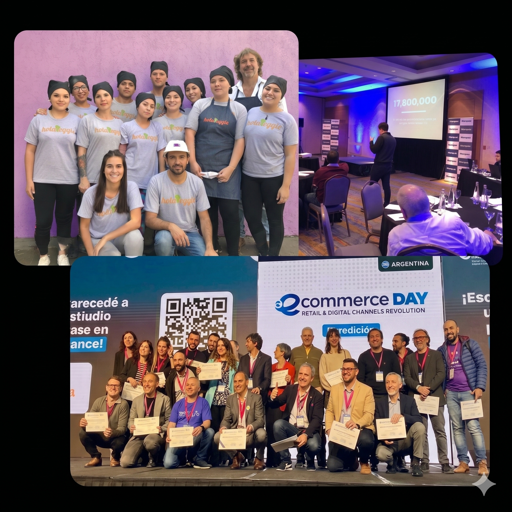

| Bloque | Temática y Demos | Tiempo |
|---|---|---|
| BLOQUE 1 | ¿Qué necesita saber el asistente? Instrucciones, documentos y acciones · RAG para reducir alucinaciones. | 15 min |
| BLOQUE 2 | ⚙️ RAG + Intervención Humana (HITL): NotebookLM, Google File Search en n8n y derivación en Chatwoot. | 20 min |
| BLOQUE 3 | ⚙️ Cómo enseñarle y conectarlo: Skills, herramientas y MCP en vivo en n8n · Catálogos para explorar. | 15 min |
| BLOQUE 4 | Elegir el flujo y comprobarlo: Pasos fijos vs. agente, validación de fuentes, autoevaluación y recursos. | 10 min |
| Q&A | Espacio de preguntas y respuestas: Dudas, casos reales y aplicación a tu negocio. | +30 min |
Es la tecnología que permite que tu IA deje de responder basándose solo en lo que "aprendió" en internet y pase a responder desde el conocimiento real de tu empresa.
Retrieval-Augmented Generation: Una arquitectura que divide el proceso en dos etapas: primero recupera documentos relevantes y luego los inyecta en el prompt para generar la respuesta.
Diferenciar dónde aportás valor real vs. dónde la IA ya está tomando el control.
Decisiones con info incompleta, contexto humano, confianza y criterio forjado en la experiencia. La IA cambiará cuánto de este trabajo requiere tu intervención.
Síntesis de info, redacción técnica, análisis comparativos y coordinación operativa. La IA está llegando aquí ahora mismo.
Procesar datos, redactar comunicaciones estándar y armar reportes. Este nivel ya está siendo automatizado.
Dividí tus tareas de la semana en estas dos columnas. El resultado te va a sorprender.
Trabajo escriptado
Trabajo estratégico
En este programa construimos las tres capas. Saber dónde está parado cada cosa evita confusión.
| ⚙️ Automatización | 🤖 Automatización con AI | 🧠 Agente IA | |
|---|---|---|---|
| Definición | Ejecuta tareas predefinidas con reglas fijas | Llama a un LLM via API en uno o más pasos | Realiza tareas no-determinísticas de forma autónoma |
| Base lógica | Lógica booleana (if/then) | Booleana + razonamiento flexible | Razonamiento + autonomía |
| Fortaleza | Rápido, confiable, predecible | Maneja complejidad y reconocimiento de patrones | Adaptable a variables nuevas, razona como humano |
| Debilidad | No se adapta. Solo hace lo que fue programado. | Más difícil de depurar e interpretar | Menos predecible, puede producir resultados inesperados |
| Ejemplo | Notificación en Slack cada vez que entra un lead | Clasificar y puntuar cada lead con un LLM | Investigar el lead, actualizar el CRM y redactar el email de seguimiento |
Ya tenés un agente con rol y personalidad. El problema aparece cuando tiene que responder algo específico de tu negocio.
Fuentes: (88%) Gartner AI in Production Survey 2024 — "AI Hallucination Incidents in Enterprise Deployments"; (3×) Databricks "Long Context RAG Performance of LLMs" — análisis de tiempo de corrección vs. prevención; ($0) Google AI Developer Blog, nov. 2025 — Google File Search API pricing.
Antes de construir un flujo, hay que separar tres piezas que cumplen funciones distintas.
Cómo debe comportarse
Su rol, tono de voz, formato de respuesta y límites (qué tiene prohibido inventar y cuándo debe pedir ayuda).
Qué información consulta
Manuales, FAQs, políticas, precios o reglamentos que el asistente lee antes de contestar para responder con datos reales.
Qué puede hacer en otros sistemas
Consultar una planilla en vivo, agendar un turno, enviar un mensaje o derivar la conversación a un humano.
Lo que pasa por detrás entre que el usuario hace una pregunta y el asistente responde con datos verificados.
Tres tipos de información que un asistente puede necesitar combinar en un flujo de n8n.
Manuales, reglamentos, políticas de devolución, preguntas frecuentes, guías internas.
Stock disponible, precios del día, calendario de turnos, estado de un pedido o puntos de un cliente.
Lo que el usuario viene hablando en esa conversación para no pedirle dos veces el mismo dato.
El criterio no es cuál tiene más funciones, sino cuál te permite conectar documentos, herramientas e intervención humana en un solo lugar.
| Plataforma | Curva | IA / RAG y Herramientas | Costo | Score |
|---|---|---|---|---|
| n8n ⭐ Recomendado | Media | Excelente. Nodos nativos de Agente IA, memoria, MCP y canales (WhatsApp/Telegram). | Gratis self-hosted / Cloud $24/mes | 10/10 |
| Make.com | Baja | Buena para flujos lineales, menos flexible para agentes con herramientas y memoria. | Desde $9/mes | 7/10 |
| Zapier | Nula | Básica. Ideal para tareas simples de 2 pasos, costosa cuando escala el volumen. | Desde $20/mes | 4/10 |
| Modelo | Ventana ctx. | Costo input (USD/1M) |
Cuándo usarlo |
|---|---|---|---|
| GPT-5.6 Luna | 1M | $0.20 | Clasificación, routing y tareas de alta velocidad y volumen a mínimo costo. |
| GPT-5.6 Terra | 1M | $2.00 | Agente principal equilibrado, razonamiento multimodal y flujos RAG robustos. |
| Claude Haiku 5.5 | 200K | $0.10 | RAG ultra-rápido, extracción de datos estructurados y baja latencia. |
| Claude Sonnet 5.5 | 1M | $2.00 | Máxima calidad de razonamiento, seguimiento de instrucciones y redacción final. |
| Gemini 3.5 Flash-Lite | 1M | $0.30 | RAG masivo ultra-económico sobre FAQs, logs y bases documentales extensas. |
| Gemini 3.8 Flash | 1M | $0.75 | El mejor balance de velocidad, razonamiento y ventana masiva para flujos complejos. |
* Nota sobre RAG: La ventana de 1M de tokens permite cargar documentos medianos de forma directa o combinarlos con buscadores como Google File Search sin infraestructura compleja.
* Nota sobre Costos: El costo de respuesta (output) suele ser de 3 a 5 veces mayor que el de lectura (input).
La decisión más importante antes de encender cualquier automatización.
Sin código ni configuraciones técnicas. El primer paso para probar si tus documentos responden bien antes de armar el bot.
Uso directo desde su plataforma web. Hoy es la herramienta gratuita más poderosa para consultar múltiples fuentes al mismo tiempo.
Desde la app de Gemini podés adjuntar un cuaderno de NotebookLM como fuente de consulta verificada.
La estructura no cambia: lo que cambia son los documentos que subís y las instrucciones del asistente.
| Caso de uso | Qué documentos consulta | Cómo empezar hoy |
|---|---|---|
| Atención al cliente | FAQs + políticas + planilla de productos | Google File Search + Sheets |
| Onboarding RRHH | Manual del empleado + licencias + beneficios | NotebookLM → File Search |
| Soporte técnico | Manuales de uso + guías paso a paso | Google File Search + HITL |
| Venta de infoproductos | Resumen del producto + precios + garantía | Instrucciones directas (System Prompt) |
| Caso de uso | Qué documentos consulta | Cómo empezar hoy |
|---|---|---|
| Legal / Normativas | Contratos modelo + reglamentos vigentes | NotebookLM / File Search |
| Mesa de ayuda interna | Procedimientos internos + instructivos | Google File Search |
| Educación y cursos | Material de clase + cronograma + lecturas | NotebookLM → File Search |
| Reclamos y garantías | Políticas de cambio + condiciones + plazos | File Search + derivación en Chatwoot |
Tres preguntas simples de negocio para elegir la herramienta sin complicarse.
| Demo | Qué vamos a ver en vivo | Herramientas |
|---|---|---|
| ⛳ Demo 1 · Reglas del Golf RAG con documentos + planilla |
Mensaje → búsqueda en PDFs oficiales con Google File Search + datos en vivo en Sheets. Lo probamos en el Chat de n8n (listo para conectar a Telegram o WhatsApp). | n8n Chat · Google File Search · Google Sheets · Gemini |
| 🌿 Demo 2 · HolaVeggie Venta en WhatsApp + HITL |
Conocimiento en instrucciones + intervención humana (HITL) en Chatwoot: cuándo deriva, cómo llega el contexto y quién tiene el control. | n8n · WhatsApp · Chatwoot |
Un asistente que responde consultas sobre el reglamento oficial, torneos y tienda — probándolo en vivo desde el Chat de n8n y listo para salir por Telegram o WhatsApp.
Mensaje → Búsqueda → Respuesta. El mismo flujo sirve para el Chat de n8n, Telegram o WhatsApp.
E-book de nutrición y recetas plant-based. Atiende consultas en WhatsApp 24/7 con el asistente "Indio" y utiliza Chatwoot para que una persona intervenga cuando hace falta.
Un ejemplo real de cómo combinar rol, información del negocio y límites claros.
# ROL
Sos Indio, el gato asistente oficial de HolaVeggie
y del ebook "El Gran Recetario Plant-Based".
Tu misión: informar sobre el ebook, cómo comprarlo
y entregar el link de descarga cuando corresponda.
# PERSONALIDAD
Simpático, alegre, empático. Cálido y divertido.
Usá emojis naturales 🐾🌿💚. Cerrá con gratitud.
Usá siempre tuteo: "cuéntame", "quieres".
# REGLAS CLAVE
- No inventes precios, alias ni enlaces.
- Solo entregás el link del ebook si recibís
"PAGO HECHO" + el email del comprador.
- Si dicen "MUESTRA" → enviá ÚNICAMENTE
el texto exacto de la sección de muestra.
- Si hay duda de precio → ofrecé cuotas primero.
- Garantía de reembolso total, sin preguntas.
# PRECIO Y PAGO
💰 19 USD
📧 paypal.me/AXELLABANARZUBI
🔒 Sin riesgo: devolvemos si no convence.
# SECUENCIA DE VENTA
1. Ofrecé info del ebook o muestra gratuita
2. CTA: "Si quieres reservar el precio de hoy,
decime QUIERO MI COPIA"
3. Al confirmar → datos de pago
4. Al recibir "PAGO HECHO" + email → link del ebook
Cuándo derivar una conversación a una persona y cómo asegurarse de que el bot no pise al humano.
duda_precio y carrito_abandonado.Reglas claras para proteger la confianza del cliente: qué puede responder solo y dónde debe frenar.
Estimación orientativa para ~2.000 consultas al mes en producción.
| Herramienta | Rol | Plan | Costo | Nota clave |
|---|---|---|---|---|
| WhatsApp / Telegram | Canal de mensajería | Según canal | $0 / por conv. | Telegram es 100% gratis; WhatsApp cobra según tipo de conversación |
| n8n | Orquestador central | Cloud / Propio | ~$5–20/mes | Cloud desde ~$20/mes o en servidor propio desde ~$5–10/mes |
| Google File Search | RAG de documentos | Pago por uso | ~$0–2/mes | Almacenamiento gratis · indexar 100 páginas cuesta centavos |
| Google Sheets | Datos en vivo | Gratis | $0 | Catálogo, stock o precios conectados directo a n8n |
| Modelo IA (Gemini / GPT) | Cerebro del asistente | Pago por uso | ~$5–25/mes | Gemini 3.5 Flash-Lite o 3.8 Flash ofrecen excelente relación costo/calidad |
| Chatwoot | Bandeja humana (HITL) | Self-hosted / Cloud | Gratis | Gratis en servidor propio o versión Cloud con soporte |
Tres conceptos distintos que suelen confundirse. Una Skill y una conexión MCP no cumplen la misma función.
Guía reutilizable para una tarea
Reúne instrucciones, criterios y pasos probados para que el asistente sepa cómo hacer bien un trabajo específico.
Acción que el asistente ejecuta
Una función puntual que el asistente puede activar cuando necesita consultar un dato o realizar un cambio en otro sistema.
Estándar de conexión universal
Model Context Protocol: el "enchufe universal" que permite conectar al asistente con múltiples herramientas y datos sin armar integraciones a medida.
Cómo pasamos de un asistente que solo conversa a uno conectado con herramientas y datos externos en n8n.
No hace falta empezar desde cero: existen directorios públicos para descubrir habilidades e integraciones listas.
Guías e instrucciones reutilizables para sumarle habilidades específicas a tu asistente.
Conexiones estándar para vincular asistentes con hojas de cálculo, CRMs, agendas y bases de datos.
skills.sh y una conexión MCP en Smithery y pensá para qué tarea concreta de tu trabajo o negocio te servirían.
Usar IA para redactar un mensaje no significa que el flujo sea un agente autónomo. Elegí según la necesidad del negocio.
Antes de dar por listo cualquier asistente con RAG, probalo siempre con este checklist de 3 preguntas.
Hacé una consulta directa sobre un dato específico (precio, plazo, regla) y verificá que cite la fuente correcta.
Probá otra consulta de una sección o documento distinto para confirmar que recupera el pasaje exacto sin mezclar temas.
Comprobá que no invente la respuesta, que reconozca que no tiene ese dato y que derive a una persona (HITL).
Cinco ideas clave para fijar los criterios de la clase de hoy.
| Afirmación | Respuesta | Por qué |
|---|---|---|
| 1. Un RAG ayuda a reducir las alucinaciones al consultar documentos antes de responder. | Verdadero | Reduce el riesgo al basarse en fuentes, pero no lo elimina. Si el dato no está en los documentos, debe reconocerlo y pedir aclaración o derivar a una persona. |
| 2. Probar un asistente en NotebookLM reemplaza las pruebas del bot en WhatsApp o Telegram. | Falso | NotebookLM sirve para validar consultas y citas sobre los documentos. También hay que probar el bot y sus conexiones en el canal real donde se va a usar. |
| 3. Un flujo puede tener pasos fijos y usar IA para redactar una respuesta. | Verdadero | Usar IA no significa que el agente elija los pasos. En un flujo agéntico, en cambio, el agente decide qué acciones o herramientas usar. |
| 4. Una Skill y una conexión MCP cumplen la misma función. | Falso | Una Skill aporta instrucciones reutilizables para una tarea. MCP permite conectar al asistente con herramientas y datos externos. |
| 5. HITL permite que una persona revise o continúe una conversación cuando sea necesario. | Verdadero | La persona puede revisar, aprobar o tomar el control. En Chatwoot vemos cómo recibe todo el contexto y continúa la conversación sin que el bot interfiera. |
Estructura lista para adaptar a tu negocio: rol, personalidad, reglas para no inventar y secuencia de atención.
Una Skill lista para subir a Claude que te ayuda a definir qué documentos y flujo conviene usar en tu proyecto.
Si tu caso de negocio incluye reservas de turnos o lectura de sitios web, acá tenés el flujo y el paso a paso en video.
Abrimos los últimos 30 minutos para revisar dudas sobre las demos, elegir qué flujo conviene para tu negocio o ver cómo aplicar RAG, MCP y Chatwoot en tu caso real.
NotebookLM y Google File Search
Derivación y contexto en Chatwoot
Instrucciones y conexiones en n8n